注意力机制的基本思想
2007年美国心理学之父提出非自主性提示和自主性提示的概念。非自主性提示是基于环境中物体的突出性和易见性。所有纸制品都是黑白印刷的，但咖啡杯是红色的。
换句话说，这个咖啡杯在这种视觉环境中是突出和显眼的，
不由自主地引起人们的注意。
所以我们会把视力最敏锐的地方放到咖啡上(图1)，喝咖啡后，我们会变得兴奋并想读书，
所以转过头，重新聚焦眼睛，然后看看书(图二)。
在注意力机制中，自主性提示被称为查询（query），而非自主性提示（客观存在的咖啡杯和书本）作为键（key）与感官输入（sensory
inputs）的值（value）构成一组 pair
作为输入。而给定任何查询，注意力机制通过注意力汇聚（attention
pooling）将非自主性提示的 key 引导至感官输入。
注意力机制通过注意力汇聚将查询（自主性提示）和键（非自主性提示）结合在一起，实现对值（感官输入）的选择倾向，这就是与
CNN 等模型的关键区别。
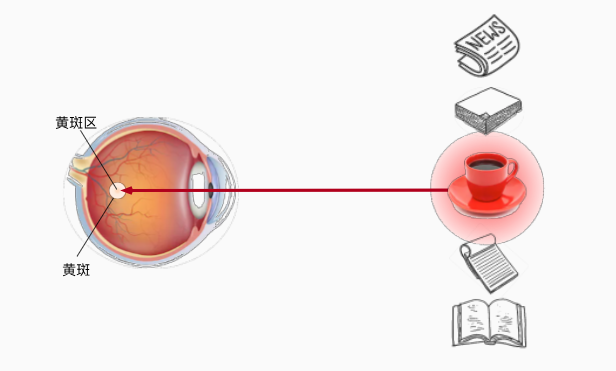
图1
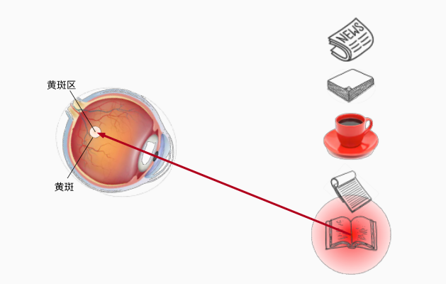
图2
注意力机制背景
非参注意力池化层
给定数据\((x_{i},y_{i})\)，\(i = 1，...，n\)，平均池化层简单方案为$f(x)=
{i}^{}y{i} $
更好的方案为60年代提出的Nadaraya-Watson核回归 \[
f(x)=\sum_{i = 1}^{n}\frac{K(x-x_{i})}{ {\textstyle \sum_{j =
1}^{n}K(x-x_{j})} } y_{i}
\] 如果\(K\)为高斯核，定义为：
\[
K(u) = \frac{1}{\sqrt{2\pi}} \exp(-\frac{u^2}{2}).
\] 带入可得到： \[
\begin{split}\begin{aligned} f(x) &=\sum_{i=1}^n \alpha(x, x_i)
y_i\\ &= \sum_{i=1}^n \frac{\exp\left(-\frac{1}{2}(x -
x_i)^2\right)}{\sum_{j=1}^n \exp\left(-\frac{1}{2}(x - x_j)^2\right)}
y_i \\&= \sum_{i=1}^n \mathrm{softmax}\left(-\frac{1}{2}(x -
x_i)^2\right) y_i. \end{aligned}\end{split}
\]
参数化注意力机制
将\(w\)作为可学习参数 \[
\begin{split}\begin{aligned}f(x) &= \sum_{i=1}^n \alpha(x, x_i) y_i
\\&= \sum_{i=1}^n \frac{\exp\left(-\frac{1}{2}((x -
x_i)w)^2\right)}{\sum_{j=1}^n \exp\left(-\frac{1}{2}((x -
x_j)w)^2\right)} y_i \\&= \sum_{i=1}^n
\mathrm{softmax}\left(-\frac{1}{2}((x - x_i)w)^2\right)
y_i.\end{aligned}\end{split}
\]
注意力评分函数
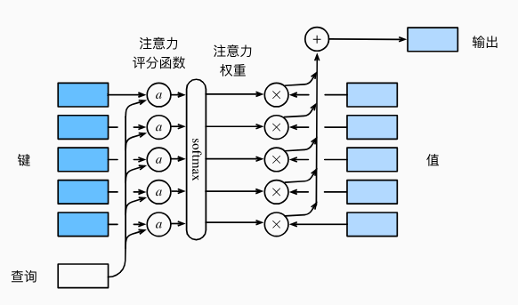
假设有一个查询\(q \in \mathbb{R}^q\)
和\(m\)个"键-值"对\((\mathbf{k}_1, \mathbf{v}_1), \ldots,
(\mathbf{k}_m, \mathbf{v}_m)，\)其中\(\mathbf{k}_i \in \mathbb{R}^k,\mathbf{v}_i \in
\mathbb{R}^v\)。注意力汇聚函数\(f\)就被表示成值的加权求和： \[
f(\mathbf{q}, (\mathbf{k}_1, \mathbf{v}_1), \ldots, (\mathbf{k}_m,
\mathbf{v}_m)) = \sum_{i=1}^m \alpha(\mathbf{q}, \mathbf{k}_i)
\mathbf{v}_i \in \mathbb{R}^v,
\] 其中查询\(q\)和键\(k_{i}\)的注意力权重(标量)是通过注意力评分函数\(a\)将两个向量映射成标量，在通过softmax运算得到的:
\[
\alpha(\mathbf{q}, \mathbf{k}_i) = \mathrm{softmax}(a(\mathbf{q},
\mathbf{k}_i)) = \frac{\exp(a(\mathbf{q}, \mathbf{k}_i))}{\sum_{j=1}^m
\exp(a(\mathbf{q}, \mathbf{k}_j))} \in \mathbb{R}.
\]
隐蔽softmax函数
1
2
3
4
5
6
7
8
9
10
11
12
13
14
15
16
|
def masked_softmax(X, valid_lens):
"""通过在最后一个轴上掩蔽元素来执行softmax操作"""
if valid_lens is None:
return nn.functional.softmax(X, dim=-1)
else:
shape = X.shape
if valid_lens.dim() == 1:
valid_lens = torch.repeat_interleave(valid_lens, shape[1])
else:
valid_lens = valid_lens.reshape(-1)
X = d2l.sequence_mask(X.reshape(-1, shape[-1]), valid_lens,
value=-1e6)
return nn.functional.softmax(X.reshape(shape), dim=-1)
|
输入：
1
| masked_softmax(torch.rand(2, 2, 4), torch.tensor([2, 3]))
|
输出：
1
2
3
4
5
| tensor([[[0.5980, 0.4020, 0.0000, 0.0000],
[0.5548, 0.4452, 0.0000, 0.0000]],
[[0.3716, 0.3926, 0.2358, 0.0000],
[0.3455, 0.3337, 0.3208, 0.0000]]])
|
加性注意力
给定查询\(\mathbf{q} \in
\mathbb{R}^q\)和键\(\mathbf{k} \in
\mathbb{R}^k\)，加性注意力的评分函数为： \[
a(\mathbf q, \mathbf k) = \mathbf w_v^\top \text{tanh}(\mathbf
W_q\mathbf q + \mathbf W_k \mathbf k) \in \mathbb{R},
\]
1
2
3
4
5
6
7
8
9
10
11
12
13
14
15
16
17
18
19
20
21
22
23
24
|
class AdditiveAttention(nn.Module):
"""加性注意力"""
def __init__(self, key_size, query_size, num_hiddens, dropout, **kwargs):
super(AdditiveAttention, self).__init__(**kwargs)
self.W_k = nn.Linear(key_size, num_hiddens, bias=False)
self.W_q = nn.Linear(query_size, num_hiddens, bias=False)
self.w_v = nn.Linear(num_hiddens, 1, bias=False)
self.dropout = nn.Dropout(dropout)
def forward(self, queries, keys, values, valid_lens):
queries, keys = self.W_q(queries), self.W_k(keys)
features = queries.unsqueeze(2) + keys.unsqueeze(1)
features = torch.tanh(features)
scores = self.w_v(features).squeeze(-1)
self.attention_weights = masked_softmax(scores, valid_lens)
return torch.bmm(self.dropout(self.attention_weights), values)
|
缩放点积注意力
\[
a(\mathbf q, \mathbf k) = \mathbf{q}^\top \mathbf{k} /\sqrt{d}.
\]
在实践中，通常使用小批量的角度考虑提高效率，例如基于\(n\)个查询和\(m\)个键—值对计算注意力，其中查询和键的长度为\(d\)，值的长度为\(v\)。 \[
\mathrm{softmax}\left(\frac{\mathbf Q \mathbf K^\top }{\sqrt{d}}\right)
\mathbf V \in \mathbb{R}^{n\times v}.
\]
1
2
3
4
5
6
7
8
9
10
11
12
13
14
15
16
17
|
class DotProductAttention(nn.Module):
"""缩放点积注意力"""
def __init__(self, dropout, **kwargs):
super(DotProductAttention, self).__init__(**kwargs)
self.dropout = nn.Dropout(dropout)
def forward(self, queries, keys, values, valid_lens=None):
d = queries.shape[-1]
scores = torch.bmm(queries, keys.transpose(1,2)) / math.sqrt(d)
self.attention_weights = masked_softmax(scores, valid_lens)
return torch.bmm(self.dropout(self.attention_weights), values)
|
自注意力
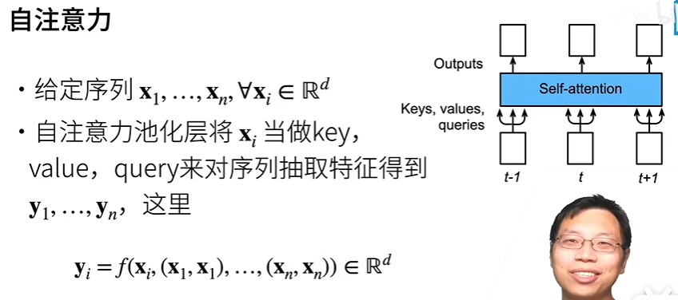
输入一个由词元组成的序列\(\mathbf{x}_1,
\ldots, \mathbf{x}_n\)，其中任意\(\mathbf{x}_i \in \mathbb{R}^d 1 \leq i \leq
n\)。该序列的自注意力输出为一个长度相同的序列\(\mathbf{y}_1, \ldots,
\mathbf{y}_n\)，其中： \[
\mathbf{y}_i = f(\mathbf{x}_i, (\mathbf{x}_1, \mathbf{x}_1), \ldots,
(\mathbf{x}_n, \mathbf{x}_n)) \in \mathbb{R}^d
\] 代码：
1
2
3
4
| num_hiddens, num_heads = 100, 5
attention = d2l.MultiHeadAttention(num_hiddens, num_hiddens, num_hiddens,
num_hiddens, num_heads, 0.5)
attention.eval()
|
1
2
3
| batch_size, num_queries, valid_lens = 2, 4, torch.tensor([3, 2])
X = torch.ones((batch_size, num_queries, num_hiddens))
attention(X, X, X, valid_lens).shape
|
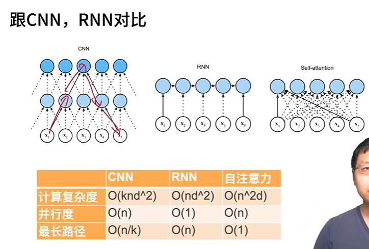
k：窗口大小，每次看到的长度为 k
n：长度
d：dimension，每个 x 的维度（长度）
并行度：每个输出( yi )可以自己并行做运算，因为
GPU
有大量的并行单元，所以并行度越高，计算的速度就越快
最长路径：对于最长的那个序列，前面时刻的信息通过神经元传递到后面时刻,对应于计算机视觉中的感受野的概念（每一个神经元的输出对应的图片中的视野）
位置编码
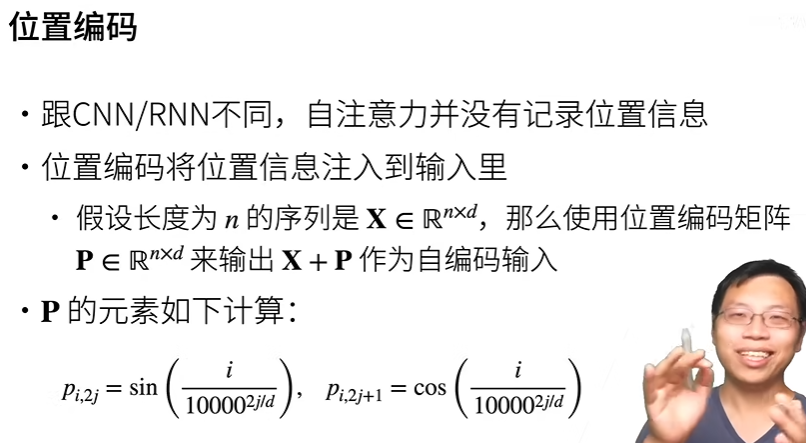
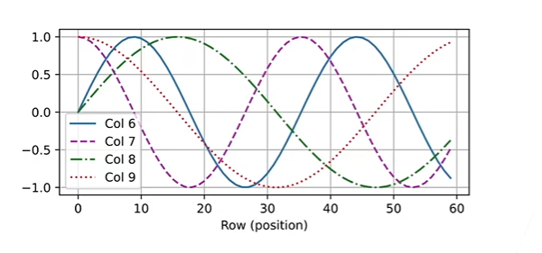
p改变相对位置
transformer是由编码器和解码器组成的，基于自注意力叠加而成，源序列和目标序列的嵌入表示加上位置编码，再分别输入到编码器和解码器中。
Transformer
的编码器是由多个相同的层叠加而成的，每个层都有两个子层（每个子层都采用了残差连接，并且在残差连接的加法计算之后，都使用了层归一化，因此
Transformer 编码器都将输出一个 d 维表示向量）
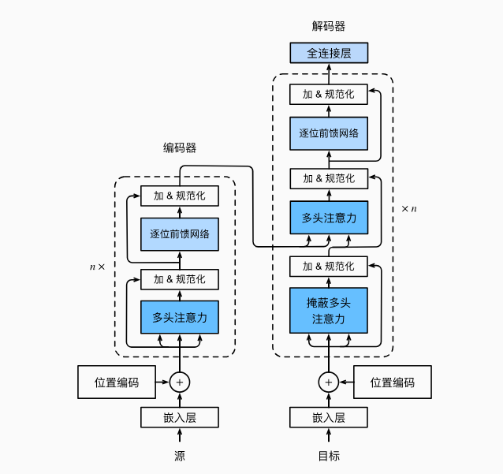
模型理解
第一个子层是多头自注意力汇聚：Transformer
块中的多头注意力实际上就是自注意力，在计算编码器的自注意力时，key
、value 和 query 的值都来自前一个编码器层的输出
第二个子层是基于位置的前馈网络：全连接，本质上和编码器-解码器的架构没有本质上的区别，将
Transformer 编码器最后一层的输出作为解码器的输入来完成信息的传递
每层都有三个子层，并且在每个子层中也使用了残差连接和层归一化
- 在解码器自注意力中，key 、value 和 query
都来自上一个解码器层的输出
- 解码器中的每个位置只能考虑该位置之前的所有位置
- 带掩码的自注意力保留了自回归的属性，确保预测仅仅依赖于已生成的输出词元
第二个子层是编码器-解码器注意力
- 除了编码器中所描述的两个子层之外，解码器还在这两个子层之间插入了编码器-解码器注意力层，作为第三个子层，它的
query 来自上一个解码器层的输出，key 和 value
来自整个编码器的输出
第三个子层是基于位置的前馈网络
多头注意力（Multi-head
attention）
对同一个 key 、value 、query 抽取不同的信息
多头注意力使用 h
个独立的注意力池化，合并各个头（head）输出得到最终输出
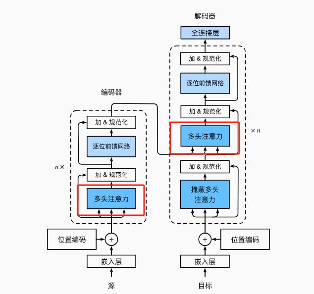
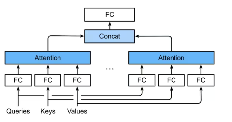
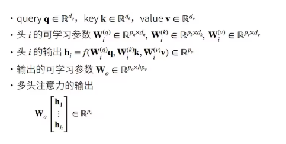
带掩码的多头注意力（Masked
Multi-head attention）
解码器对序列中一个元素输出时，不应该考虑该元素之后的元素
基于位置的前馈网络（Positionwise
FFN）
- 基于位置的前馈网络对序列中的所有位置的表示进行变换时使用的是同一个多层感知机（MLP），这就是称前馈网络是基于位置的原因
其实就是全连接层，将输入形状由（b，n，d）变成（bn，d），然后作用两个全连接层，最后输出形状由（bn，d）变回（b，n，d），等价于两层核窗口为
1 的一维卷积层
- b：batchsize
- n：序列长度
- d：dimension
在做卷积的时候是将 n 和 d 合成一维，变成 nd ；但是现在 n
是序列的长度，会变化，要使模型能够处理任意的特征，所以不能将 n
作为一个特征，因此对每个序列中的每个元素作用一个全连接（将每个序列中的
xi 当作是一个样本）
残差连接和归一化（Add &
norm）
加入归一化能够更好地训练比较深的网络，但是这里不能使用批量归一化，批量归一化对每个特征/通道里元素进行归一化
在做 NLP 的时候，如果选择将 d 作为特征的话，那么批量归一化的输入是
n*b ，b 是批量大小，n
是序列长度，序列的长度是会变的，所以每次做批量归一化的输入大小都不同，所以会导致不稳定，训练和预测的长度本来就不一样，预测的长度会慢慢变长，所以批量归一化不适合长度会变的
NLP 应用
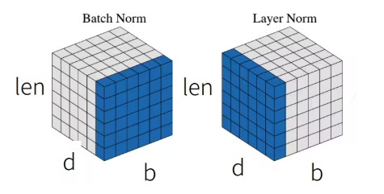
层归一化和批量归一化的目标相同，但是层归一化是基于特征维度进行归一化的
层归一化和批量归一化的区别在于：批量归一化在 d
的维度上找出一个矩阵，将其均值变成 0 ，方差变成
1，层归一化每次选的是一个元素，也就是每个 batch
里面的一个样本进行归一化
尽管批量归一化在计算机视觉中被广泛应用，但是在自然语言处理任务中，批量归一化通常不如层归一化的效果好，因为在自然语言处理任务中，输入序列的长度通常是变化的
然在做层归一化的时候，长度也是变化的，但是至少来说还是在一个单样本中，不管批量多少，都给定一个特征，这样对于变化的长度来讲，稍微稳定一点，不会因为长度变化，导致稳定性发生很大的变化
信息传递
假设编码器中的输出是 y1，... ，yn ，将其作为解码中第 i 个 Transformer
块中多头注意力的 key 和 value
它是普通的注意力（它的 key 和 value 来自编码器的输出， query
来自目标序列）
预测
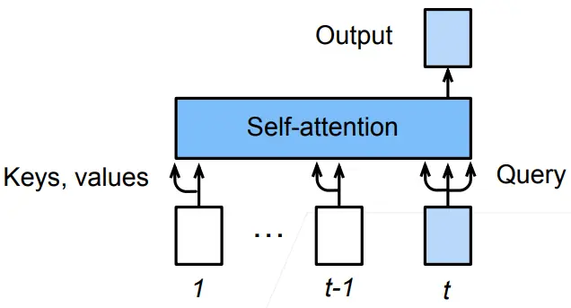
预测第 t+1 个输出时，解码器中输入前 t 个预测值
- 在自注意力中，前 t 个预测值作为 key 和 value ，第 t 个预测值还作为
query
- 关于序列到序列模型，在训练阶段，输出序列的所有位置（时间步）的词元都是已知的；但是在预测阶段，输出序列的次元是逐个生成的
代码
基于位置的前馈网络
1
2
3
4
5
| import math
import pandas as pd
import torch
from torch import nn
from d2l import torch as d2l
|
1
2
3
4
5
6
7
8
9
10
11
12
|
class PositionWiseFFN(nn.Module):
"""基于位置的前馈网络"""
def __init__(self, ffn_num_input, ffn_num_hiddens, ffn_num_outputs,
**kwargs):
super(PositionWiseFFN, self).__init__(**kwargs)
self.dense1 = nn.Linear(ffn_num_input, ffn_num_hiddens)
self.relu = nn.ReLU()
self.dense2 = nn.Linear(ffn_num_hiddens, ffn_num_outputs)
def forward(self, X):
return self.dense2(self.relu(self.dense1(X)))
|
1
2
3
4
5
|
ffn = PositionWiseFFN(4, 4, 8)
ffn.eval()
ffn(torch.ones((2, 3, 4)))[0]
|
输出：
1
2
3
4
| tensor([[-0.8290, 1.0067, 0.3619, 0.3594, -0.5328, 0.2712, 0.7394, 0.0747],
[-0.8290, 1.0067, 0.3619, 0.3594, -0.5328, 0.2712, 0.7394, 0.0747],
[-0.8290, 1.0067, 0.3619, 0.3594, -0.5328, 0.2712, 0.7394, 0.0747]],
grad_fn=<SelectBackward0>)
|
残差连接和层规范化
1
2
3
4
5
| ln = nn.LayerNorm(2)
bn = nn.BatchNorm1d(2)
X = torch.tensor([[1, 2], [2, 3]], dtype=torch.float32)
print('layer norm:', ln(X), '\nbatch norm:', bn(X))
|
1
2
3
4
| layer norm: tensor([[-1.0000, 1.0000],
[-1.0000, 1.0000]], grad_fn=<NativeLayerNormBackward0>)
batch norm: tensor([[-1.0000, -1.0000],
[ 1.0000, 1.0000]], grad_fn=<NativeBatchNormBackward0>)
|
现在可以使用残差连接和层规范化来实现AddNorm类。暂退法也被作为正则化方法使用。
1
2
3
4
5
6
7
8
9
10
|
class AddNorm(nn.Module):
"""残差连接后进行层规范化"""
def __init__(self, normalized_shape, dropout, **kwargs):
super(AddNorm, self).__init__(**kwargs)
self.dropout = nn.Dropout(dropout)
self.ln = nn.LayerNorm(normalized_shape)
def forward(self, X, Y):
return self.ln(self.dropout(Y) + X)
|
1
2
3
| add_norm = AddNorm([3, 4], 0.5)
add_norm.eval()
add_norm(torch.ones((2, 3, 4)), torch.ones((2, 3, 4))).shape
|
编码器
1
2
3
4
5
6
7
8
9
10
11
12
13
14
15
16
17
18
|
class EncoderBlock(nn.Module):
"""Transformer编码器块"""
def __init__(self, key_size, query_size, value_size, num_hiddens,
norm_shape, ffn_num_input, ffn_num_hiddens, num_heads,
dropout, use_bias=False, **kwargs):
super(EncoderBlock, self).__init__(**kwargs)
self.attention = d2l.MultiHeadAttention(
key_size, query_size, value_size, num_hiddens, num_heads, dropout,
use_bias)
self.addnorm1 = AddNorm(norm_shape, dropout)
self.ffn = PositionWiseFFN(
ffn_num_input, ffn_num_hiddens, num_hiddens)
self.addnorm2 = AddNorm(norm_shape, dropout)
def forward(self, X, valid_lens):
Y = self.addnorm1(X, self.attention(X, X, X, valid_lens))
return self.addnorm2(Y, self.ffn(Y))
|
正如从代码中所看到的，Transformer编码器中的任何层都不会改变其输入的形状。
1
2
3
4
5
| X = torch.ones((2, 100, 24))
valid_lens = torch.tensor([3, 2])
encoder_blk = EncoderBlock(24, 24, 24, 24, [100, 24], 24, 48, 8, 0.5)
encoder_blk.eval()
encoder_blk(X, valid_lens).shape
|
1
| torch.Size([2, 100, 24])
|
Transformer编码器的代码中，堆叠了num_layers个EncoderBlock类的实例。
1
2
3
4
5
6
7
8
9
10
11
12
13
14
15
16
17
18
19
20
21
22
23
24
25
26
27
28
|
class TransformerEncoder(d2l.Encoder):
"""Transformer编码器"""
def __init__(self, vocab_size, key_size, query_size, value_size,
num_hiddens, norm_shape, ffn_num_input, ffn_num_hiddens,
num_heads, num_layers, dropout, use_bias=False, **kwargs):
super(TransformerEncoder, self).__init__(**kwargs)
self.num_hiddens = num_hiddens
self.embedding = nn.Embedding(vocab_size, num_hiddens)
self.pos_encoding = d2l.PositionalEncoding(num_hiddens, dropout)
self.blks = nn.Sequential()
for i in range(num_layers):
self.blks.add_module("block"+str(i),
EncoderBlock(key_size, query_size, value_size, num_hiddens,
norm_shape, ffn_num_input, ffn_num_hiddens,
num_heads, dropout, use_bias))
def forward(self, X, valid_lens, *args):
X = self.pos_encoding(self.embedding(X) * math.sqrt(self.num_hiddens))
self.attention_weights = [None] * len(self.blks)
for i, blk in enumerate(self.blks):
X = blk(X, valid_lens)
self.attention_weights[
i] = blk.attention.attention.attention_weights
return X
|
1
2
3
4
| encoder = TransformerEncoder(
200, 24, 24, 24, 24, [100, 24], 24, 48, 8, 2, 0.5)
encoder.eval()
encoder(torch.ones((2, 100), dtype=torch.long), valid_lens).shape
|
1
| torch.Size([2, 100, 24])
|
解码器
1
2
3
4
5
6
7
8
9
10
11
12
13
14
15
16
17
18
19
20
21
22
23
24
25
26
27
28
29
30
31
32
33
34
35
36
37
38
39
40
41
42
43
44
45
46
47
| class DecoderBlock(nn.Module):
"""解码器中第i个块"""
def __init__(self, key_size, query_size, value_size, num_hiddens,
norm_shape, ffn_num_input, ffn_num_hiddens, num_heads,
dropout, i, **kwargs):
super(DecoderBlock, self).__init__(**kwargs)
self.i = i
self.attention1 = d2l.MultiHeadAttention(
key_size, query_size, value_size, num_hiddens, num_heads, dropout)
self.addnorm1 = AddNorm(norm_shape, dropout)
self.attention2 = d2l.MultiHeadAttention(
key_size, query_size, value_size, num_hiddens, num_heads, dropout)
self.addnorm2 = AddNorm(norm_shape, dropout)
self.ffn = PositionWiseFFN(ffn_num_input, ffn_num_hiddens,
num_hiddens)
self.addnorm3 = AddNorm(norm_shape, dropout)
def forward(self, X, state):
enc_outputs, enc_valid_lens = state[0], state[1]
if state[2][self.i] is None:
key_values = X
else:
key_values = torch.cat((state[2][self.i], X), axis=1)
state[2][self.i] = key_values
if self.training:
batch_size, num_steps, _ = X.shape
dec_valid_lens = torch.arange(
1, num_steps + 1, device=X.device).repeat(batch_size, 1)
else:
dec_valid_lens = None
X2 = self.attention1(X, key_values, key_values, dec_valid_lens)
Y = self.addnorm1(X, X2)
Y2 = self.attention2(Y, enc_outputs, enc_outputs, enc_valid_lens)
Z = self.addnorm2(Y, Y2)
return self.addnorm3(Z, self.ffn(Z)), state
|
1
2
3
4
5
| decoder_blk = DecoderBlock(24, 24, 24, 24, [100, 24], 24, 48, 8, 0.5, 0)
decoder_blk.eval()
X = torch.ones((2, 100, 24))
state = [encoder_blk(X, valid_lens), valid_lens, [None]]
decoder_blk(X, state)[0].shape
|
1
2
3
4
5
6
7
8
9
10
11
12
13
14
15
16
17
18
19
20
21
22
23
24
25
26
27
28
29
30
31
32
33
34
35
36
| class TransformerDecoder(d2l.AttentionDecoder):
def __init__(self, vocab_size, key_size, query_size, value_size,
num_hiddens, norm_shape, ffn_num_input, ffn_num_hiddens,
num_heads, num_layers, dropout, **kwargs):
super(TransformerDecoder, self).__init__(**kwargs)
self.num_hiddens = num_hiddens
self.num_layers = num_layers
self.embedding = nn.Embedding(vocab_size, num_hiddens)
self.pos_encoding = d2l.PositionalEncoding(num_hiddens, dropout)
self.blks = nn.Sequential()
for i in range(num_layers):
self.blks.add_module("block"+str(i),
DecoderBlock(key_size, query_size, value_size, num_hiddens,
norm_shape, ffn_num_input, ffn_num_hiddens,
num_heads, dropout, i))
self.dense = nn.Linear(num_hiddens, vocab_size)
def init_state(self, enc_outputs, enc_valid_lens, *args):
return [enc_outputs, enc_valid_lens, [None] * self.num_layers]
def forward(self, X, state):
X = self.pos_encoding(self.embedding(X) * math.sqrt(self.num_hiddens))
self._attention_weights = [[None] * len(self.blks) for _ in range (2)]
for i, blk in enumerate(self.blks):
X, state = blk(X, state)
self._attention_weights[0][
i] = blk.attention1.attention.attention_weights
self._attention_weights[1][
i] = blk.attention2.attention.attention_weights
return self.dense(X), state
@property
def attention_weights(self):
return self._attention_weights
|